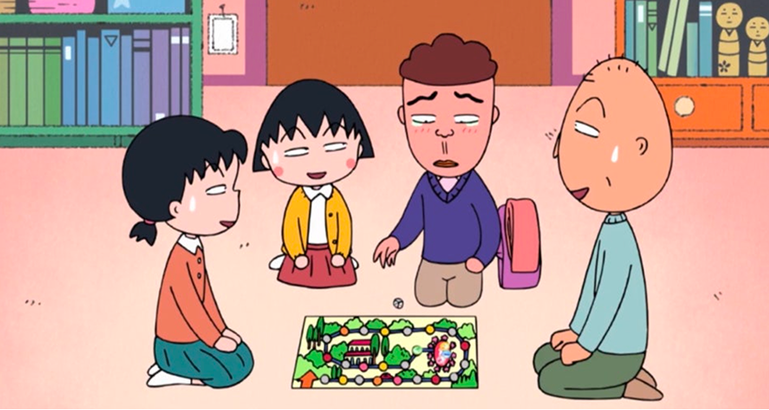
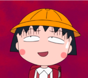
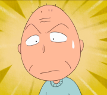
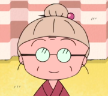
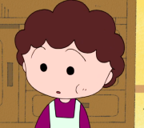
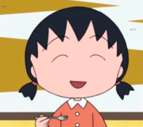
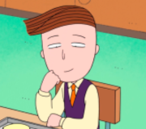
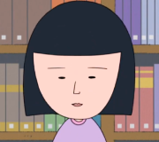

마루코는 아홉살
사쿠라 모모코의 순정 일상만화 <모모는 엉뚱해>를 원작으로 한 애니메이션
엉뚱하지만 미워할 수 없는 귀여운 9살 꼬마 숙녀 마루코를 중심으로 그 가족과 친구들의 소소한 일상 이야기를 따뜻하고 코믹하게 그린 작품으로 평온한 일상이 배경이다. 주로 학교생활에서 벌어지는 사소한 에피소드나 친구들과의 우정을 다루고 있어 오랜 시간이 지나도 변함없이 사랑받고 있다. 엽기적이고 엉뚱하지만 자신의 생각을 거침없이 표현하는 꾸밈없는 캐릭터인 마루코의 순수함이 남녀노소 모두에게 웃음과 잔잔한 감동을 전한다.

📌 등장인물 : 가족
-

사쿠라 마루코 -

할아버지 -

할머니 -

엄마 -
아빠 -

언니
📌 등장인물 : 친구들
-
타마에 -

나르 -

하루
마루코는 아홉살은 단순한 애니메이션을 넘어, 일상에서 공감할 수 있는 따뜻한 이야기를 담고 있는 애니메이션이다. 다양한 등장인물들과 함께 펼쳐지는 유쾌한 에피소드들은 시간이 지나도 여전히 많은 사람들에게 기억되고 있다. 또한, OTT 플랫폼과 youtube 채널을 통해 더빙본을 언제든 시청할 수 있다.